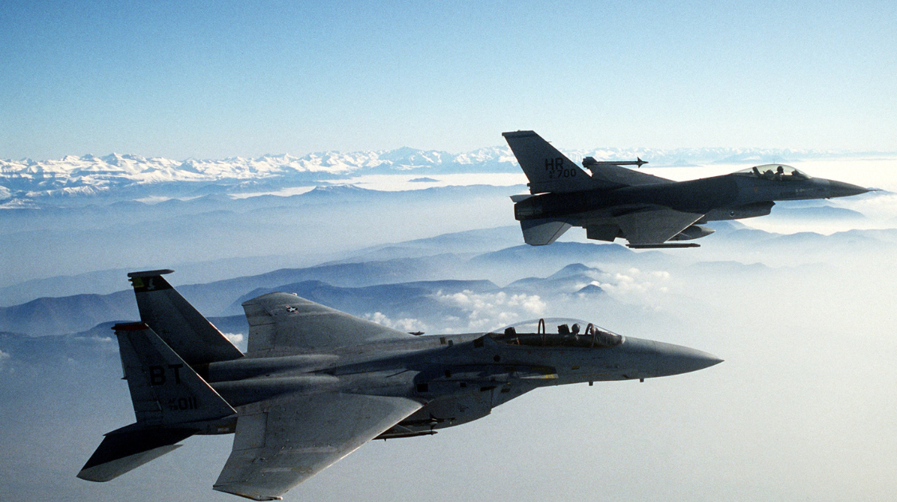

World
Debate Over No–fly Zone in Ukraine
By Enya Fang | Published Mar 7, 2022 1:24 p.m. PST

Ukrainian President Volodymyr Zelensky has repeatedly pleaded with the West to enforce a “no-fly zone” over “significant parts” of Ukraine”.
“Knowing that new shelling and victims are inevitable, NATO consciously made the decision not to close airspace in Ukraine,” Zelensky said in a recorded speech. “At this [NATO] summit we have seen that not everyone considers the fight for the freedom of Europe a priority.”
A no-fly zone is militarily-enforced airspace where certain aircraft are barred entry. In the context of war, NFZs have typically banned aircraft from entering airspace to launch attacks, transport troops and weapons, and conduct surveillance.
The US and other major global powers have ruled out the establishment of a no-fly zone. Imposing NFZs would mark a significant escalation to the war, potentially bringing NATO directly in conflict with a nuclear power.
"If the West does [impose no-fly zones], Ukraine will defeat the aggressor with much less blood," said Zelensky, who remains in Ukraine after declining an evacuation offer from the United States, saying that “the fight is here; I need ammunition, not a ride.”
Coherency continues as the Ukrainian president has appealed several times, and said on Thursday NATO will not establish a "no-fly" zone, they should provide warplanes so Ukraine can defend itself. Many members, including even those who tended to stray away from military assistance like Germany, have shipped thousands of firearms and “non-lethal weapons” to the nation.
They were followed by a slew of sanctions from the West freezing Russian assets, banning Russian aircraft, postponing the construction of the Nord Stream 2 pipeline, targeting Russian oligarchs, and recently – ousting Russian financial institutions from SWIFT.
Still, President Biden and the White House have not wavered on their refusal to send American troops to Ukraine, including to enforce and administer a NFZ.
"It would require, essentially, the U.S. military shooting down Russian planes and causing ... a potential direct war with Russia — something we want to avoid," White House press secretary Jen Psaki said on Thursday.
NATO Secretary-General Jens Stoltenberg has also ruled out NFZs, saying on Friday: "We understand the desperation but we also believe that if we did that (impose a no-fly zone) we would end up with something that could lead to a full-fledged war in Europe involving [many] more countries and much more suffering."
“We are not part of this conflict, and we have a responsibility to ensure it does not escalate and spread beyond Ukraine,” he added.
"If NATO imposes it, and we shoot down even one Russian plane, we're at war with Russia," says Howard Stoffer, a professor at the University of New Haven. Unlike past conflicts in which NFZs have been enforced, Russia has a robust and highly sophisticated military and is a nuclear power.
Historically, NFZs have been used in countries including Libya, Bosnia, and Iraq after the 1991 Gulf War. But Western militaries then were vastly superior to those they faced in these cases.
The bottom line: "We are not in a position where we want to get engaged in a conventional conflict with the Russians because that could rapidly escalate to a tactical nuclear level and a strategic nuclear level," Stoffer says. "Then we're dealing with the end of history as we know it."